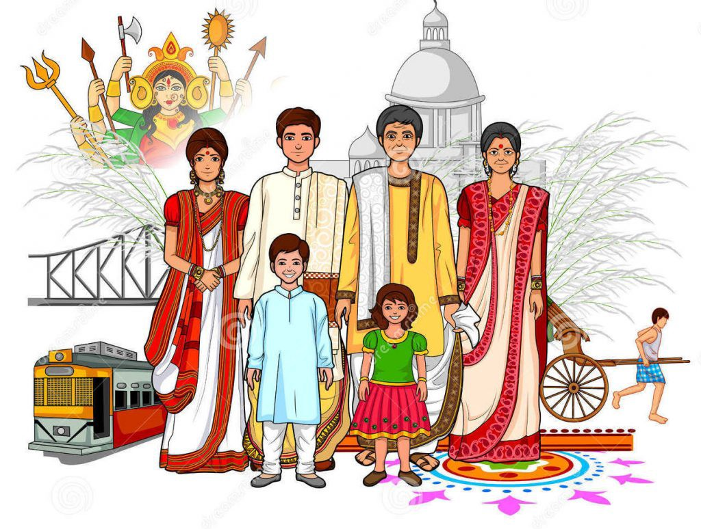
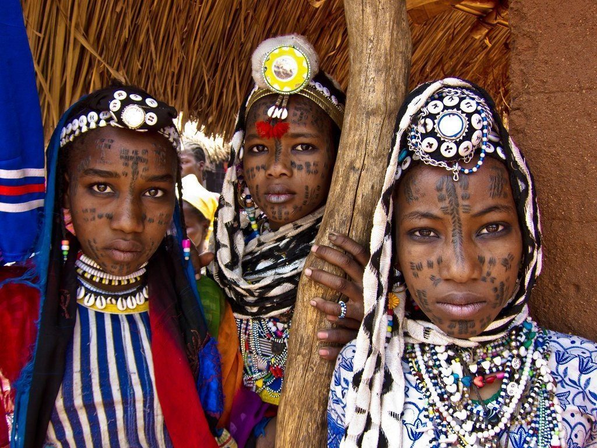
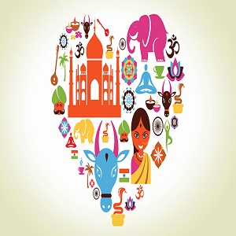
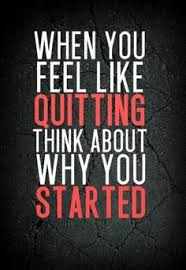

what is culture?
Culture is the characteristics and knowledge of a particular group of people, encompassing language, religion, cuisine, social habits, music and arts.
Culture encompasses religion, food, what we wear, how we wear it, our language, marriage, music, what we believe is right or wrong, how we sit at the
table, how we greet visitors, how we behave with loved ones, and a million other things," Cristina De Rossi, an anthropologist at Barnet
and Southgate College in New York, told Live Science.
The word "culture" derives from a French term, which in turn derives from the Latin "colere," which means to tend to the earth and grow, or cultivation
and nurture. "It shares its etymology with a number of other words related to actively fostering growth," De Rossi said.
Western culture
 The term "Western culture" has come to define the culture of European countries as well as those that have been heavily influenced by European immigration, such as the United States, according to Khan University. Western culture has its roots in the Classical Period of the Greco-Roman era and the rise of Christianity in the 14th century. Other drivers of Western culture include Latin, Celtic, Germanic and Hellenic ethnic and linguistic groups. Today, the influences of Western culture can be seen in almost every country in the world.Latin culture
Many of the Spanish-speaking nations are considered part of the Latin culture, while the geographic region is widespread. Latin America is typically defined as those parts of the Central America, South America and Mexico where Spanish or Portuguese are the dominant languages. Originally, the term "Latin America" was used by French geographers to differentiate between Anglo and Romance (Latin-based) languages, according to the University of Texas. While Spain and Portugal are on the European continent, they are considered the key influencers of what is known as Latin culture, which denotes people using languages derived from Latin, also known as Romance languages. National holidays:
African culture
The continent of Africa is essential to all cultures. Human life originated on this continent and began to migrate to other areas of the world around 60,000 years ago, according to the Natural History Museum in London. Other researchers, like those from Estonian Biocentre in Tartu, believe that the first migration may have been much earlier, as early as 120,000 years ago. Researchers come to these conclusions by studying human genomes from various cultures to trace their DNA to common ancestors. Fossil records also factor into some of these theories.HERE ARE A FEW INTERESTING FACTS THAT REALLY HELP MAKE OUR WORLD A FUND PLACE TO LIVE
- There are over 6,000 languages spoken in the world today, many of which are spoken by fewer than a few hundred people. The top 10 or languages however make up the vast majority of all of the speakers in the world.
- Mexicans celebrate New Years Eve by eating grapes at the stroke of midnight. This tradition is actually fairly common among Latin American countries and dates back to their ancestors.
- French people have the longest life span for women, the third longest for men, and they have the fastest train in the world clocked at 357mph! If you feel the need for speed and the desire to live a long time, France may be your country.
- Spain had a three year civil war that killed over 500.000 people.
- The United States spends three times more on their military than the next 3 countries combined.
- Dubai is home to the tallest building in the world - , which stands at a towering 2717 feet in height.
- Africa is home to anywhere from 800 to 1,500 of the worlds languages making it possibly the most linguistically diverse continent in the world.

Top Five Countries With the Most Fascinating Cultures and Histories:
China,Indi,Greece,Italy,Japan.
